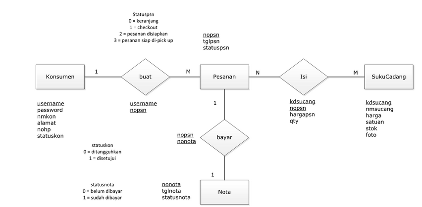
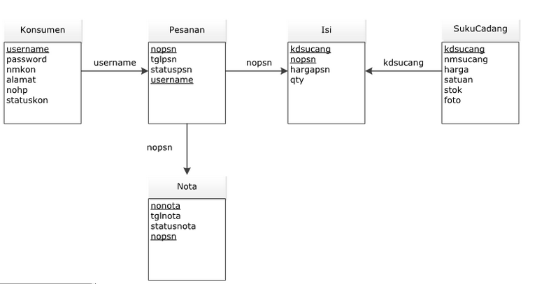

NIM : 1811500032
Nama : Nurdin Sanjaya
Kelompok : TI6J
Hasil saya menyimpulkan (menyadur) dari pertemuan keenam :
1. Menjelaskan kembali skenario perkuliahan dari skenario perhitungan nilai kehadiran dihitung dari membuat file readme.md per direktori yang ditandai dengan
membuat direktori pada repository github per pertemuan dengan mencantumkan nim, nama, dan kelompok sebagai penilaian nilai kehadiran dan dikumpulkan 1 jam
setelah perkuliahan dimulai.
2. Menjelaskan skenario perkuliahan dari skenario perhitungan nilai tugas yang ditandai dengan mendengar dan memahami setiap pertemuan, kemudian menyimpulkan
pembahasan setiap pertemuan tersebut dan di upload ke repository pada direktori pada setiap pertemuan dengan membuat file index.html beserta file pendukung lainnya.
3. Menjelaskan pada pertemuan ke 6 ini mengenai class diagram beserta pengertian dan penggunaan dari class diagram yang mengambarkan hubungan antar kelas atau antar tabel
4. Menjelaskan class diagram merupakan representasi lain dari Entity Relationship Diagram (ERD) dan Logical Record Structure (LRS), tetapi lebih lengkap karena memuat
struktur tabel dan operasi terhadap basisdata (query) terhadap tabel tersebut.
5. Class diagram terdiri dari : nama class, attribut, method dimana memiliki fungsi yang sangat penting dalam membuat sebuah rancangan yang membentuk class diagram.
6. Stereotype (dalam basis data) yaitu menentukan / menandakan attribut yang menjadi pk = primary key maupun fk = foreign key.
7. Multiplicity yaitu menentukan tingkat hubungan / kardinalitas antar class melalui association (garis hubungan antar class), yang ditentukan dengan tingkatan sebagai berikut:
• 1 => hanya 1 dan pasti hanya 1
• 0..1 => dapat tidak ada (kosong) sampai dengan 1
• 0..* => dapat tidak ada (kosong) sampai dengan tak terhingga (banyak)
• * => dapat banyak (tak terhingga)
• 1..* => sedikitnya 1, bisa lebih dari 1
Hasil Class Diagram saya pada project astah DOWNLOAD "Silahkan Klik"
Rancangan ERD pada activity diagram

Rancangan LRS pada activity diagram

Rancangan Class Diagram